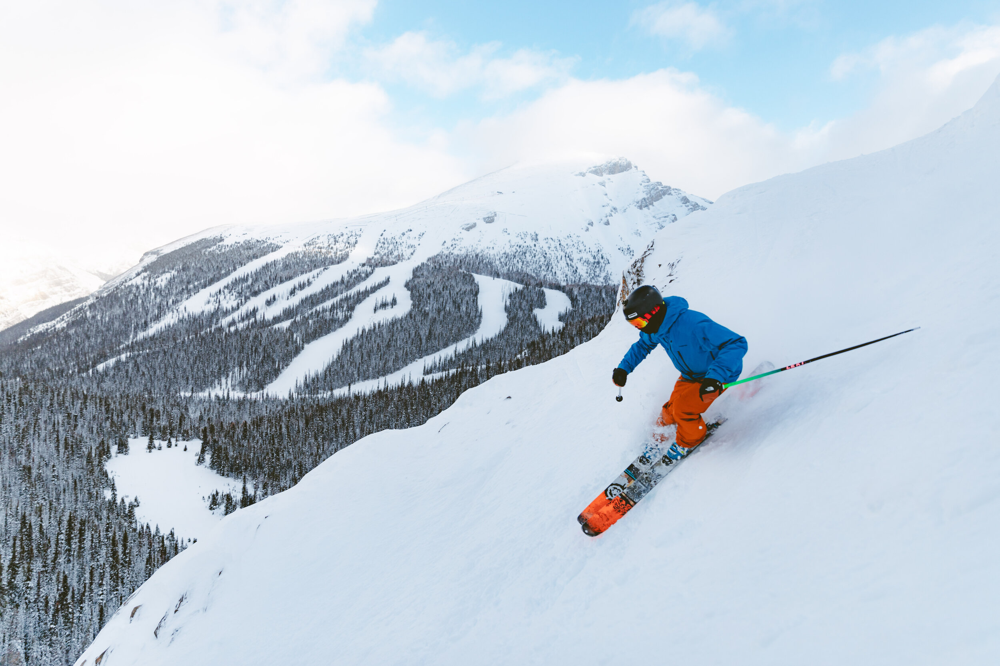

Skiing is a popular winter sport that involves sliding down snow-covered slopes using long, narrow boards called skis. It is a thrilling activity that attracts millions of participants worldwide each year. Skiers can enjoy a variety of experiences, from leisurely cruising on beginner slopes to challenging themselves on steep, difficult terrain. Skiing can be done individually or in groups, and can be enjoyed at resorts, backcountry areas, or even in urban environments with the help of artificial snow. It requires skill, balance, and physical fitness, and offers a unique way to experience the beauty of winter landscapes. With its many variations and styles, skiing is a versatile and exciting sport that has captured the imagination of people of all ages and backgrounds.
